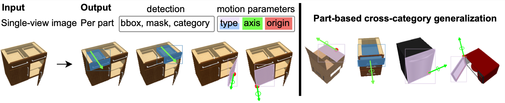
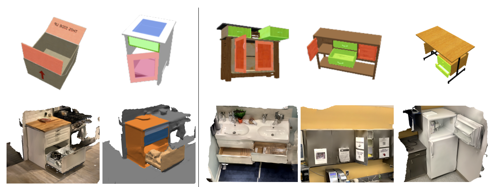
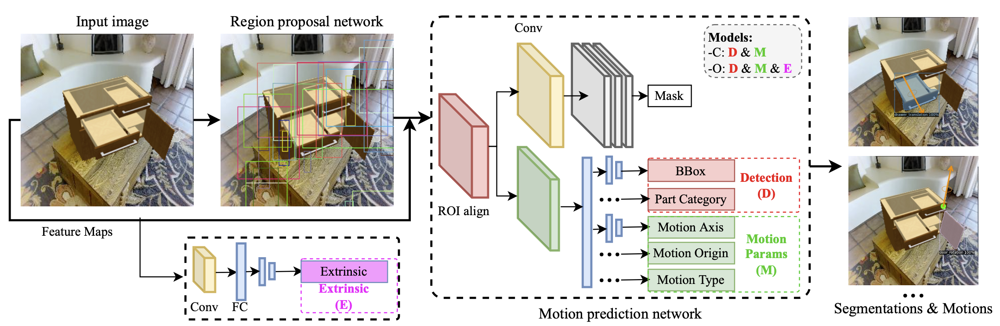

Localize
Find every openable part with a bounding box and segmentation mask.
A single-view perception task for articulated 3D objects.

We address the task of predicting which parts of an object can open and how those parts move. Given one image, OPD detects every openable part and estimates the parameters that describe its articulation.
To study this problem, we introduce two complementary datasets: OPDSynth, built from existing synthetic objects, and OPDReal, built from RGB-D reconstructions of real objects. We also introduce OPDRCNN, a neural architecture that jointly detects openable parts and predicts their motion parameters.
The experiments expose a difficult generalization problem: a model must infer functional structure from limited visual evidence, often on object categories it did not see during training. OPDRCNN improves over prior work and baselines, especially when using RGB input.
Find every openable part with a bounding box and segmentation mask.
Identify the part category and whether its motion is rotational or translational.
Recover a 3D motion axis and origin for each detected part.
The task, datasets, model, and cross-category experiments—presented end to end.
Two datasets and one unified detection architecture.
OPDSynth covers varied part categories and kinematic structures at scale. OPDReal complements it with RGB-D reconstructions, semantic part annotations, and real-world appearance.

Both architectures extend a Mask R-CNN backbone with motion heads. Alongside detection and segmentation, the network predicts motion type, 3D axis orientation, and motion origin for each openable part.

Everything needed to reproduce OPD and its baselines.
The full implementation, OPDSynth and OPDReal data, plus pretrained RGB, depth, and RGB-D models.
The project implementation, prepared dataset, and pretrained models used for the OPDPN comparison.
Our PyTorch implementation of ANCSH with the converted dataset and pretrained comparison models.
Published at ECCV 2022 as an oral presentation.
This work was funded in part by a Canada CIFAR AI Chair, a Canada Research Chair, and an NSERC Discovery Grant, and enabled in part by support from WestGrid and Compute Canada.
We thank Sanjay Haresh for scanning support and video narration; Yue Ruan for scanning and data annotation; and Supriya Pandhre, Xiaohao Sun, and Qirui Wu for annotation support.
BibTeX for the ECCV 2022 publication.
@inproceedings{jiang2022opd,
title={OPD: Single-view 3D Openable Part Detection},
author={Jiang, Hanxiao and Mao, Yongsen and Savva, Manolis and Chang, Angel X.},
booktitle={Computer Vision--ECCV 2022: 17th European Conference, Tel Aviv, Israel, October 23--27, 2022, Proceedings, Part XXXIX},
pages={410--426},
year={2022},
organization={Springer}
}